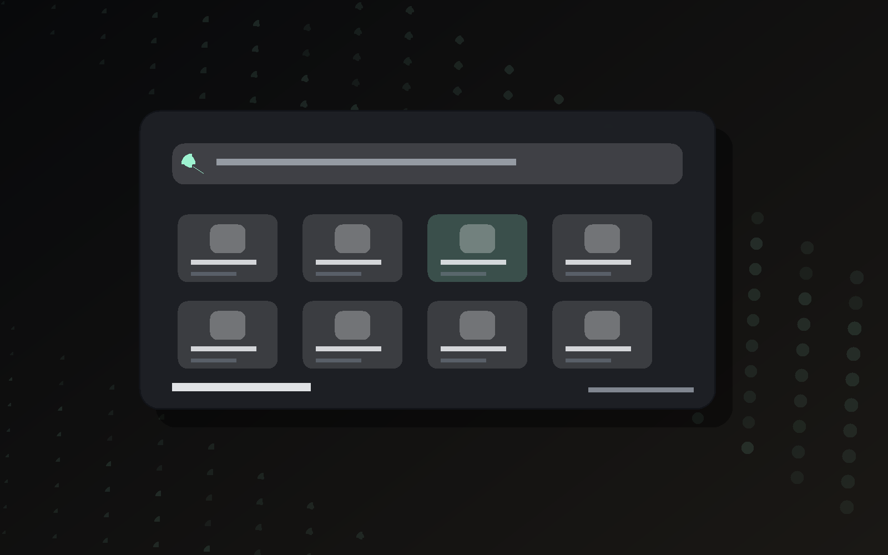

Le cadre reprend la logique de Nova : navigation, recherche, resultats, details et actions.

Launcher Windows + Assistant IA
Nova Command
Une commande centrale pour ouvrir tes apps, lancer tes jeux, chercher sur le web, calculer et parler a Nova Assistant sans quitter ton flow.
- Version
- 1.0.0 portable
- Systeme
- Windows 10 / 11
- Taille
- 143 Mo
Apps
Detection Windows
Jeux
Bibliotheques et raccourcis
Web
Recherche rapide
IA
Assistant integre
Demo interactive
Nova directement dans le site
Un cadre fictif qui montre l'app comme elle serait ouverte sur Windows. Tu peux cliquer, chercher et changer de mode, mais rien ne s'ouvre vraiment.
Enter
Les apps sont inventees pour la vitrine. Le site ne lit pas ton PC et ne lance aucun programme.
Les visiteurs comprennent directement a quoi ressemble Nova avant de telecharger.
Utilitaires
Ce que Nova fait vite
Apps et jeux du PC
Nova scanne Windows, nettoie les doublons et garde une liste claire pour lancer ce qui compte vraiment.
Actions multiples
Selectionne plusieurs elements et lance-les ensemble depuis une seule commande.
Recherche web
Tape une requete ou separe deux recherches avec un slash pour preparer plusieurs onglets.
Nova Assistant
Conversations, projets, limite globale et actions Nova dans une interface sombre et directe.
Design
Sobre, rapide, pas bruyant
Nova est pense comme une popup de travail : fond sombre, gros focus sur la recherche, infos utiles seulement quand elles servent.
Telechargement
Download Nova Command
Le fichier portable contient l'application Windows prete a lancer depuis le dossier extrait.
Nova-Command-portable.zip
SHA-256
B7B1A62A2554C3DAEA20CFBC65E503F22278259CC196E43E50A33F66100B5E85
Telecharger le ZIP
Installation
Simple et direct
- Telecharge le fichier ZIP.
- Extrais le dossier ou tu veux.
- Lance Nova Command.exe.